12.3 DQN과 아타리
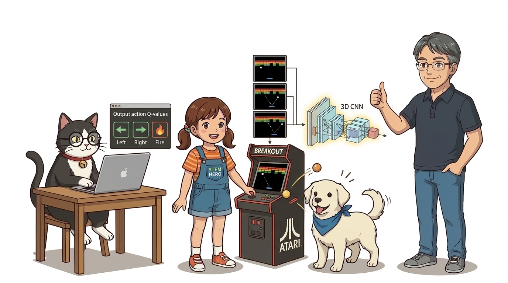
아타리 DQN 파이프라인의 전체 조망
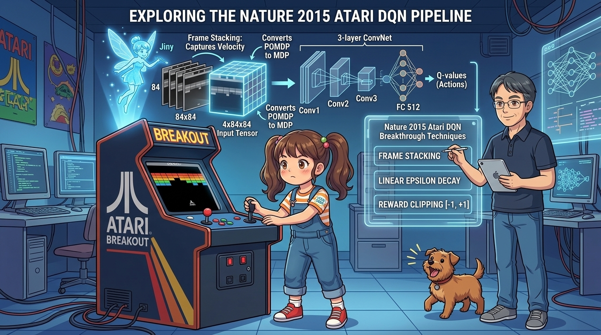
그림 12-3-0 아타리 벽돌깨기(Breakout) 캐비닛을 조작하는 도로시와, 공의 속도를 포착하기 위해 4개 프레임을 겹쳐 CNN으로 전달하는 파이프라인을 점검하는 지니, 그리고 딥마인드 네이처(Nature 2015)의 학습 공학 혁신을 설명하는 이호진 교수님심층 강화학습(DRL)의 위대한 탄생: NIPS 2013 논문
DQN은 2013년 딥마인드(DeepMind)가 발표한 역사적인 논문 「Playing Atari with Deep Reinforcement Learning」 [11]에서 처음 제안되었습니다.
인간이 플레이하던 고전 아케이드 비디오 게임을 인공지능이 화면 픽셀(Raw Pixel)만을 보고 스스로 학습하여 인간 이상의 실력을 달성한 최초의 사례였습니다.
그림 12-3-01 2013년 딥마인드 NIPS 아타리 논문: 심층 강화학습의 위대한 탄생
아타리(Atari)란 무엇인가?
논문 제목에 등장하는 ‘Atari(아타리)’는 1970~1980년대 비디오 게임 산업을 이끌었던 전설적인 게임 회사의 이름입니다.
강화학습 연구 분야에서는 아타리 2600 콘솔용으로 제작된 수십 가지의 레트로 아케이드 게임군(퐁, 벽돌깨기, 스페이스 인베이더 등)을 통칭하여 ‘아타리 벤치마크(Atari Benchmark)’라고 부릅니다.
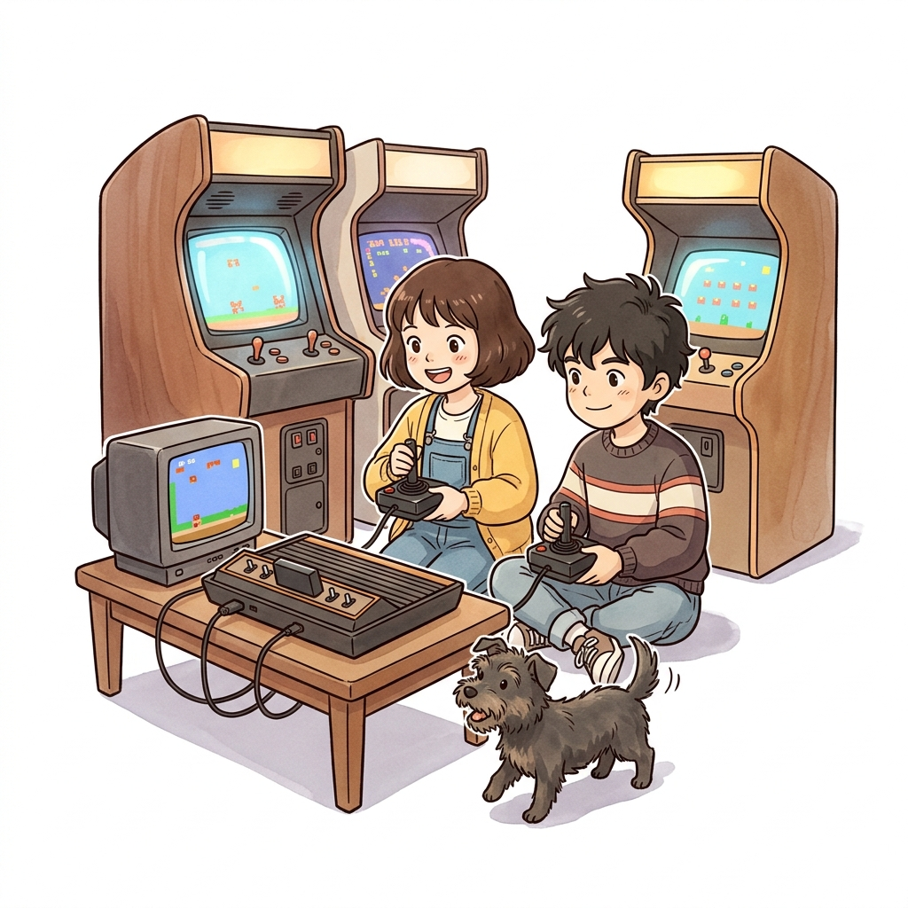
그림 12-3-02 1980년대 클래식 아타리 비디오 게임과 레트로 아케이드 역사인공지능 역사에 새겨진 이정표: Nature 2015
[!NOTE] DQN은 2013년 첫 발표 이후 알고리즘 안정성을 대폭 개선하여, 2015년 세계 최고 권위의 과학 학술지인 『네이처(Nature)』 본논문 [12]에 게재되었습니다:
「Human-level control through deep reinforcement learning」이 연구는 인공신경망이 게임의 규칙이나 내부 물리 법칙에 대한 사전 지식 없이, 순수하게 화면 이미지와 점수(보상) 피드백만으로 49개 아타리 게임 중 절반 이상에서 전문 게이머 수준을 뛰어넘었음을 입증했습니다.
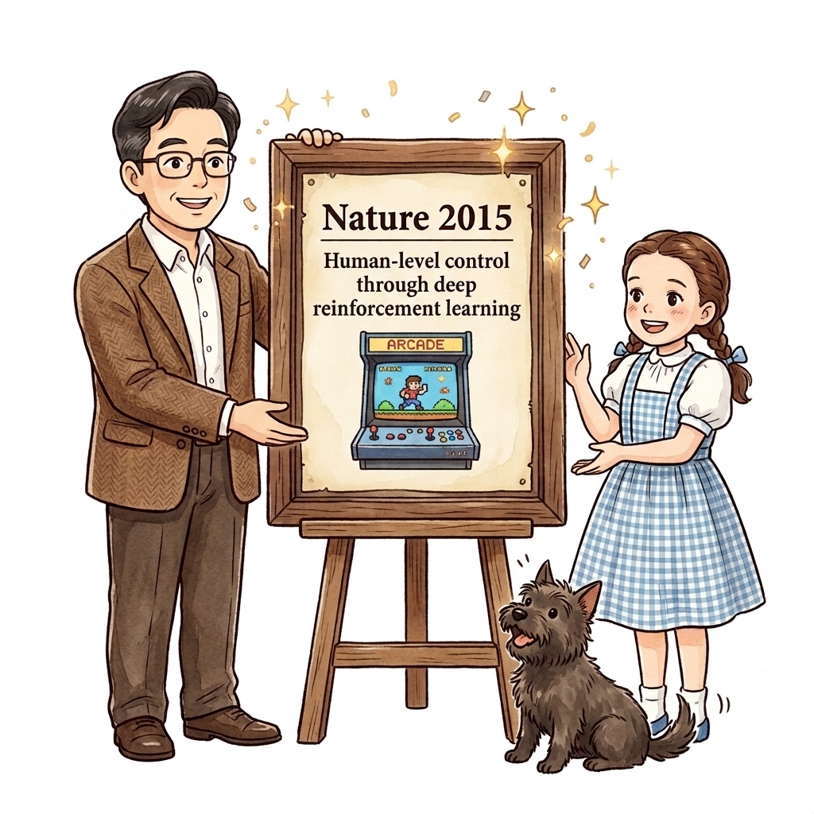
그림 12-3-03 2015년 네이처(Nature) 본논문 등재: 인간 수준 제어를 달성한 인공지능4차원 카트폴에서 210×160 픽셀 아타리 세계로의 도약
앞선 12.1절과 12.2절에서는 4개의 수치(위치, 속도, 각도, 각속도)로 정의된 〈카트폴〉 환경을 DQN으로 제어했습니다.
하지만 인간이 실제 세상에서 마주하는 문제는 수치 몇 개가 깔끔하게 정돈되어 주어지지 않습니다.
수만 개의 컬러 픽셀이 쏟아지는 아타리 비디오 게임과 같은 고차원 시각 환경에 직면했을 때, 과연 카트폴을 풀었던 우리의 DQN은 어떻게 확장되어야 할까요?
그림 12-3-04 단순 4차원 센서 카트폴에서 210x160 픽셀 아타리 세계로의 도약
좋은 소식: DQN의 놀라운 범용성
여기에는 아주 놀라운 ‘좋은 소식’과 현실적인 ‘나쁜 소식’이 있습니다.
- 좋은 소식: 앞 절(12.2절)에서 구현한
step03_dqn_cartpole.py의 핵심 뼈대인 경험 재생(Replay Buffer)과 목표 신경망(Target Network) 알고리즘 코드는 단 한 줄도 바꿀 필요 없이 아타리에 그대로 적용됩니다! - 입력층과 신경망 구조만 시각 처리에 적합하게 교체하면 완전히 동일한 학습 루프가 동작합니다.
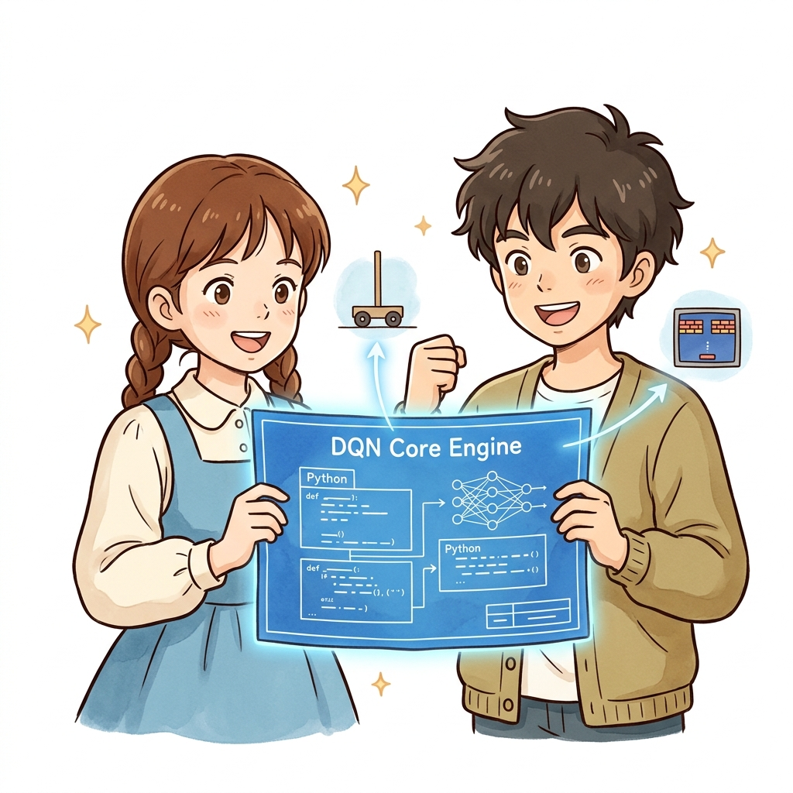
그림 12-3-05 DQN의 놀라운 범용성: 카트폴 코드의 핵심 골격을 그대로 아타리에 재사용나쁜 소식: 엄청난 연산량과 GPU 학습의 장벽
반면 ‘나쁜 소식’은 계산 비용의 폭발입니다:
- 카트폴은 상태가 4차원 벡터에 불과하여 CPU에서 2~3초 만에 250 에피소드 학습이 끝났습니다.
- 하지만 아타리는 초당 60프레임의 고해상도 시각 데이터를 수백만 번 처리해야 하므로, 고성능 GPU를 탑재한 워크스테이션에서도 완전한 수렴까지 24시간에서 수일 이상의 연산 시간이 소요됩니다.
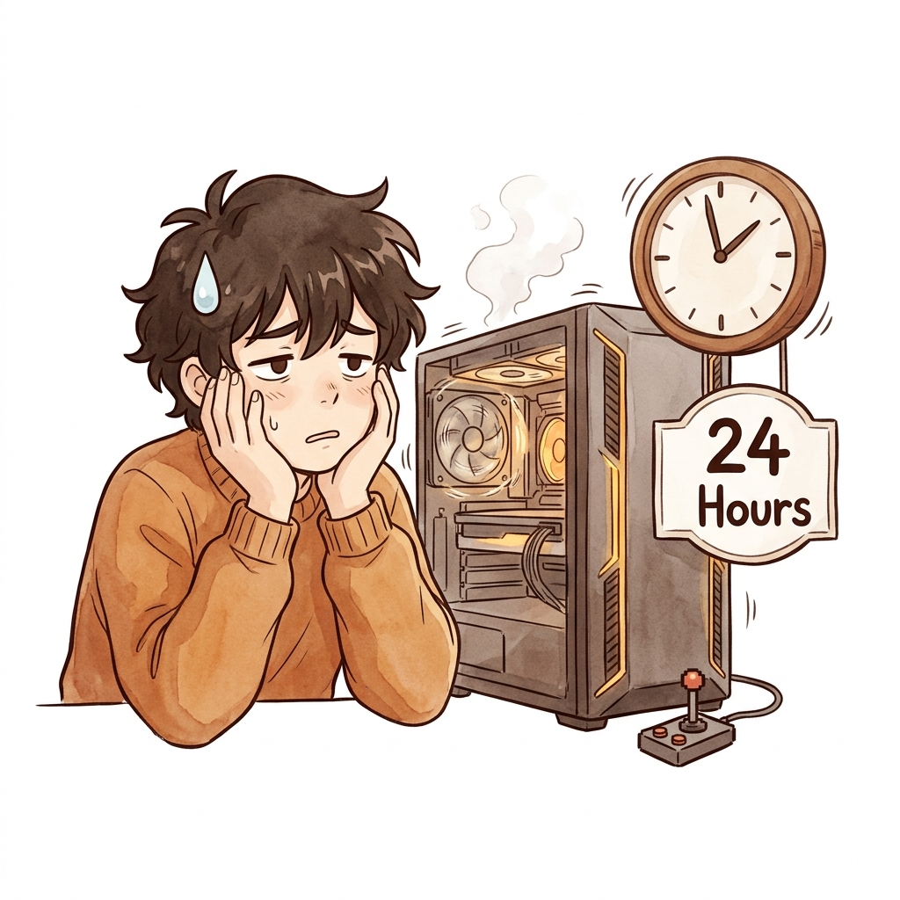
그림 12-3-06 방대한 연산량의 장벽: 대규모 픽셀 처리와 GPU 24시간 학습의 인내카트폴 대비 아타리 DQN 3대 차이점
따라서 이번 절에서는 학생 여러분이 무거운 아타리 에뮬레이터를 며칠 동안 돌리지 않더라도 핵심 원리를 완벽하게 터득할 수 있도록, 카트폴 DQN과의 3대 결정적 차이점을 집중 분석합니다:
- 전처리(Preprocessing)와 프레임 스태킹(Frame Stacking): 시각 데이터 압축 및 POMDP 해결
- 합성곱 신경망(CNN) 아키텍처: 픽셀 공간의 2차원 특징 맵 추출
- 학습 공학 기법(Training Tricks): $\epsilon$-선형 감쇠 스케줄, 보상 클리핑(Reward Clipping)
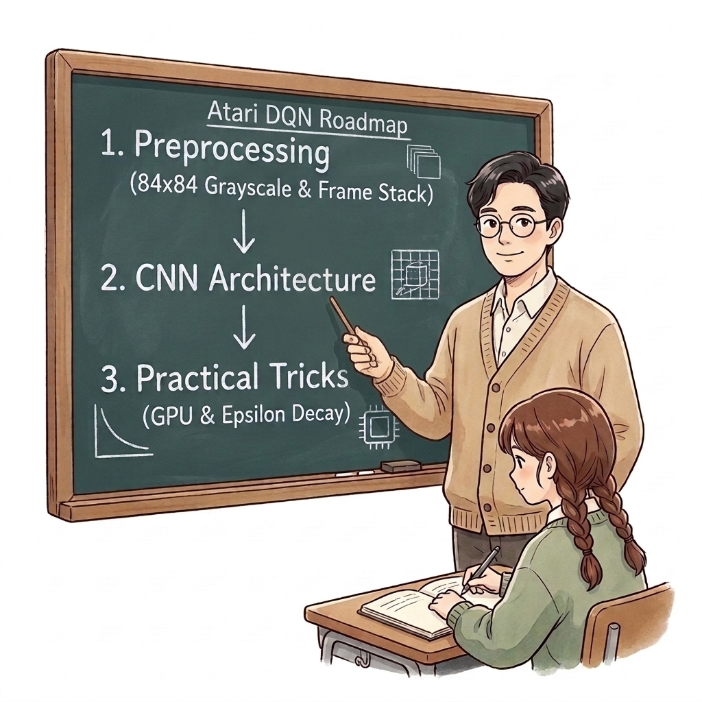
그림 12-3-07 카트폴 대비 아타리 DQN 3대 차이점: 전처리, CNN, 실전 훈련 팁12.3.1 아타리 게임 환경
OpenAI Gym의 아타리 에뮬레이션 슈트
OpenAI Gym(및 최신 Gymnasium)은 고전 아타리 2600 게임을 강화학습 환경으로 즉시 구동할 수 있도록 ALE(Arcade Learning Environment) 라이브러리를 내장하고 있습니다.
수십 종의 게임이 표준 인터페이스(env.reset(), env.step())로 완전히 통일되어 있어, 카트폴 환경을 다루던 방식 그대로 아타리 게임을 교체할 수 있습니다.
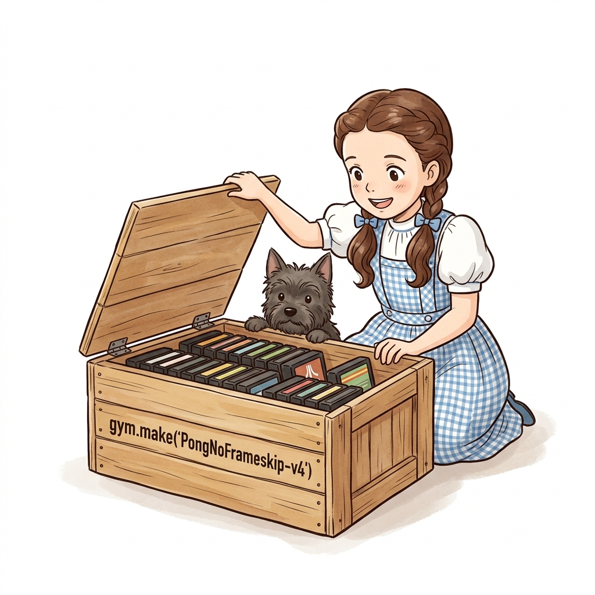
그림 12-3-08 OpenAI Gym이 제공하는 표준 아타리 에뮬레이션 환경 컬렉션대표 예제: 클래식 탁구 게임 〈퐁(Pong)〉
이번 절에서는 아타리 환경 중 가장 대표적이고 직관적인 〈퐁(Pong)〉 게임을 중심으로 설명합니다.
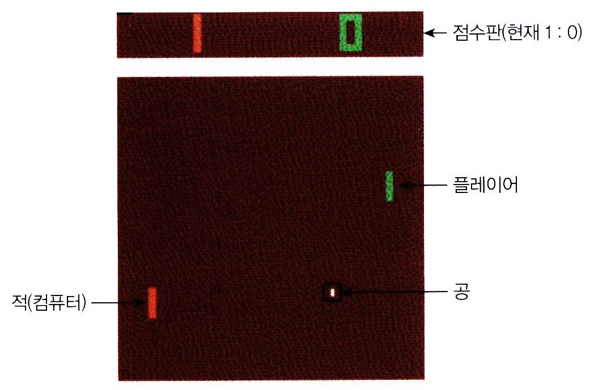
그림 12-10 게임 〈퐁(Pong)〉의 실제 플레이 화면 (점수판 1:0, 상대 패들, 탁구공, 플레이어 패들)〈퐁〉의 경기 규칙과 관찰 상태
- 게임 방식: 2인용 탁구 경기를 위에서 내려다본(Top-View) 구조입니다.
- 조작: 화면 오른쪽의 녹색 막대(플레이어)를 위/아래로 조작하여 공을 받아쳐야 합니다.
- 점수 규칙: 공이 상대편(왼쪽) 벽을 통과하면 $+1$점, 내 쪽 벽을 통과하면 $-1$점을 받습니다. 21점을 먼저 내는 쪽이 승리합니다.
- 날것의 관찰(Raw State): 에이전트가 매 스텝 받는 입력은 ‘가로 210, 세로 160, RGB 3채널’의 이미지 배열 ($210 \times 160 \times 3 = 100,800$ 바이트)입니다.
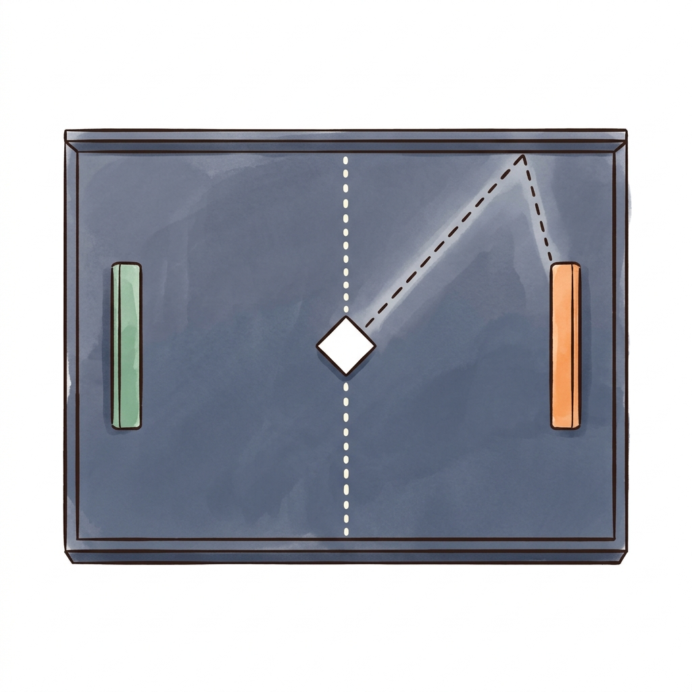
그림 12-3-09 탑뷰 탁구 게임 〈퐁(Pong)〉의 기본 규칙과 좌우 패들 인터랙션10만 개 픽셀이 주는 강화학습의 도전 과제
10만 개가 넘는 컬러 픽셀 값을 12.2절에서 다룬 완전 연결 계층(MLP)에 그대로 입력하면 어떻게 될까요?
- 가중치 파라미터가 수천만 개로 폭증하여 메모리가 고갈됩니다.
- 패들이나 공이 화면 어디에 위치하든 동일한 물리 법칙(충돌, 반사)이 적용되어야 하는데, 단순 일렬 나열 벡터는 공간적인 2차원 연관성을 전혀 보존하지 못합니다.
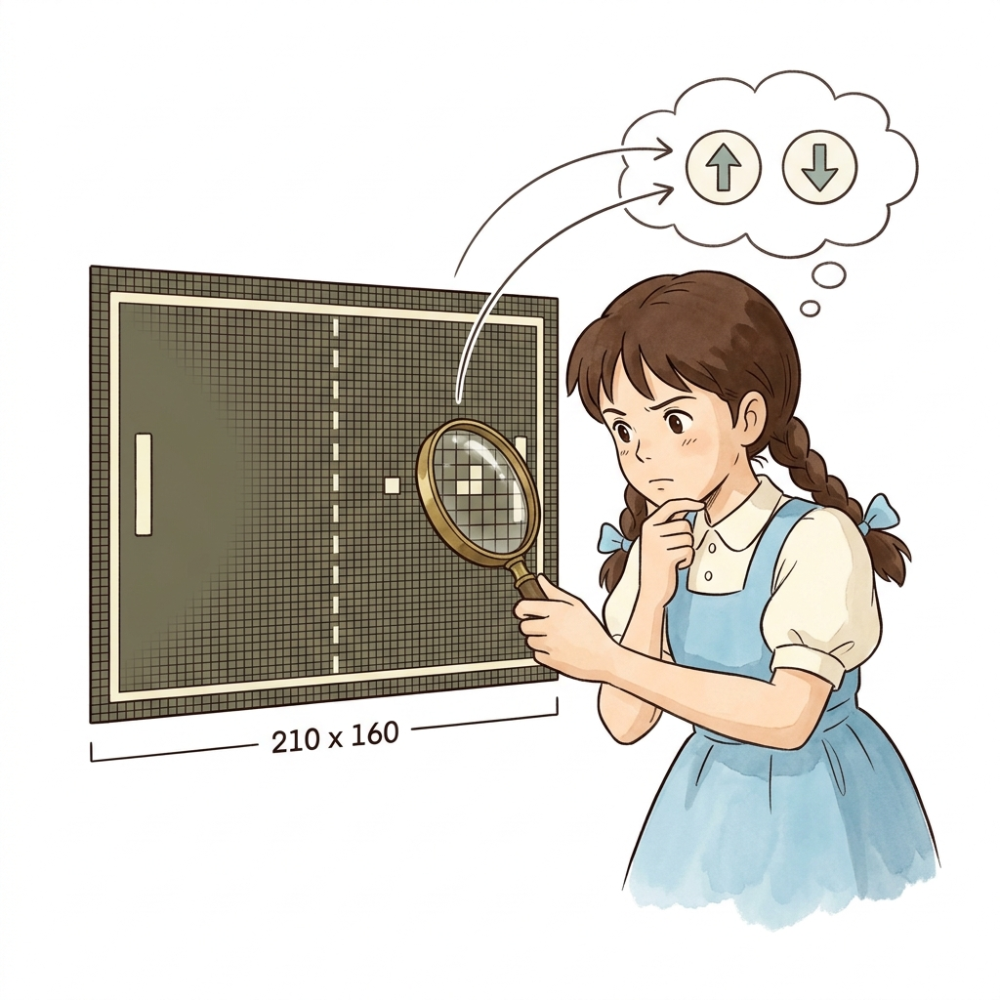
그림 12-3-10 가로 210, 세로 160 RGB 3채널 고해상도 픽셀 입력의 도전 과제12.3.2 전처리(Preprocessing)
마르코프 성질(Markov Property)의 복습
지금까지 우리가 배운 모든 강화학습 이론은 마르코프 결정 과정(MDP)에 기초합니다.
마르코프 성질이란 “현재 상태 $S_t$ 하나만 알면, 과거의 모든 역사($S_0, S_1, \dots, S_{t-1}$)를 몰라도 다음 상태 $S_{t+1}$와 보상 $R_{t+1}$의 확률 분포를 완벽하게 결정할 수 있다”는 원리입니다.
\[P(S_{t+1} \mid S_t, A_t, S_{t-1}, A_{t-1}, \dots) = P(S_{t+1} \mid S_t, A_t)\]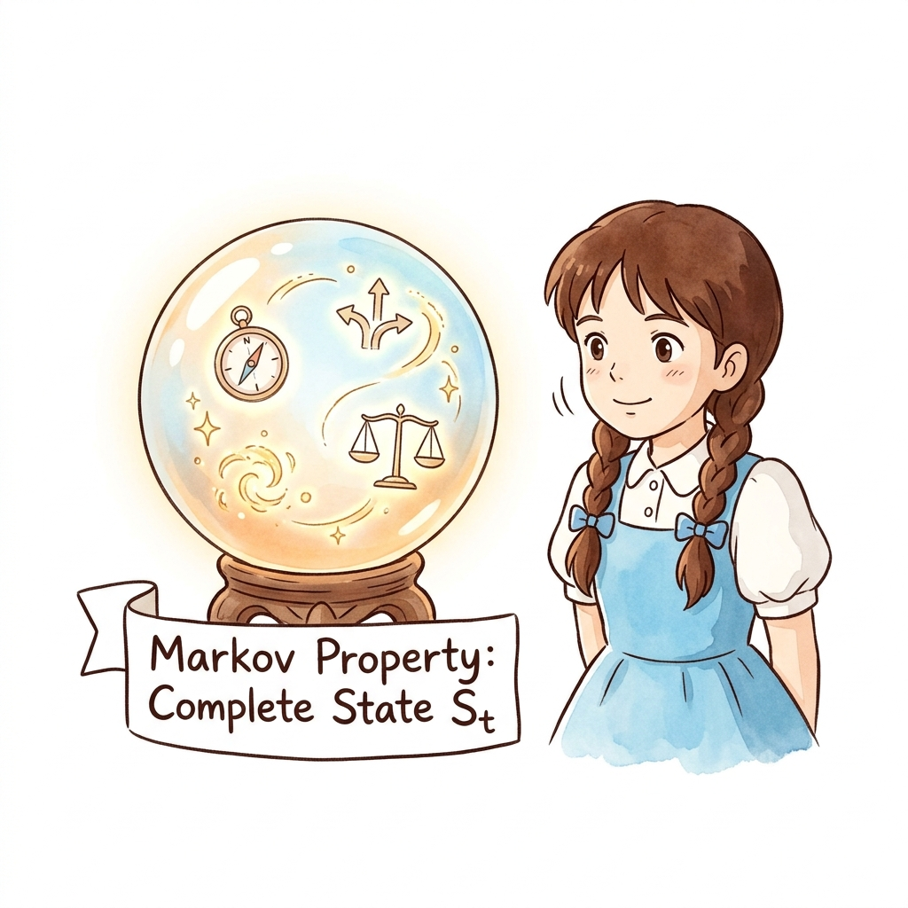
그림 12-3-11 마르코프 결정 과정(MDP): 현재 상태 하나만으로 다음 상태와 보상이 결정되는 완전성단일 정지 화면의 치명적 함정: POMDP의 덫
그런데 〈퐁〉의 스크린샷 단 한 장(정지 화면)을 가만히 들여다보십시오.
- 화면 가운데에 탁구공이 떠 있습니다.
- 질문: 공이 지금 왼쪽으로 날아가는 중일까요, 오른쪽으로 날아가는 중일까요? 그리고 시속 10km로 느리게 가나요, 시속 80km로 총알처럼 날아가나요?
- 답변: 단 한 장의 사진으로는 절대 알 수 없습니다!
공의 진행 방향과 속도를 모르면, 플레이어 패들을 위로 올려야 할지 아래로 내려야 할지 판단할 수 없습니다. 이처럼 관찰 가능한 정보에 결함이 있어 환경의 참된 상태를 전부 보지 못하는 문제를 부분 관찰 마르코프 결정 과정(POMDP; Partially Observable Markov Decision Process)이라고 부릅니다.
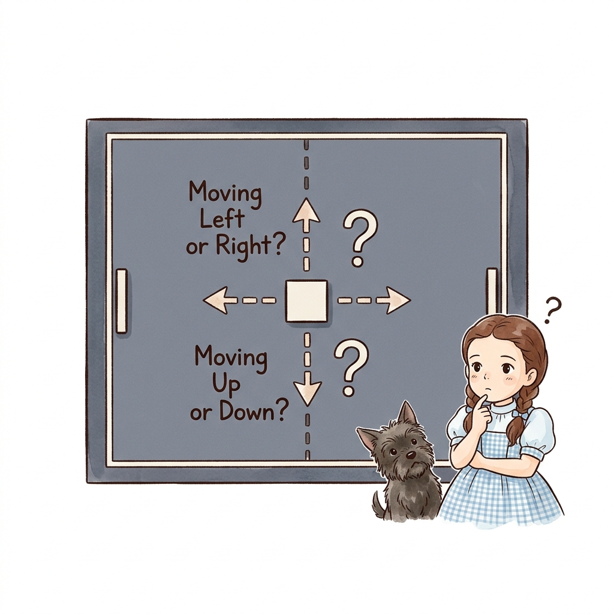
그림 12-3-12 단일 정지 화면의 치명적 한계: 공의 이동 방향과 속도를 알 수 없는 POMDP 상황딥마인드의 번뜩이는 묘수: 프레임 스태킹(Frame Stacking)
딥마인드는 복잡한 메모리 구조 없이 이 치명적인 POMDP 문제를 아주 우아하게 해결했습니다.
바로 연속된 4장의 프레임을 시간 순서대로 겹쳐서 하나의 상태 텐서(State Tensor)로 묶어주는 프레임 스태킹(Frame Stacking) 기법입니다!
- $t-3$, $t-2$, $t-1$, $t$ 순간의 화면 4장을 나란히 겹쳐서 4채널 텐서로 신경망에 입력합니다.
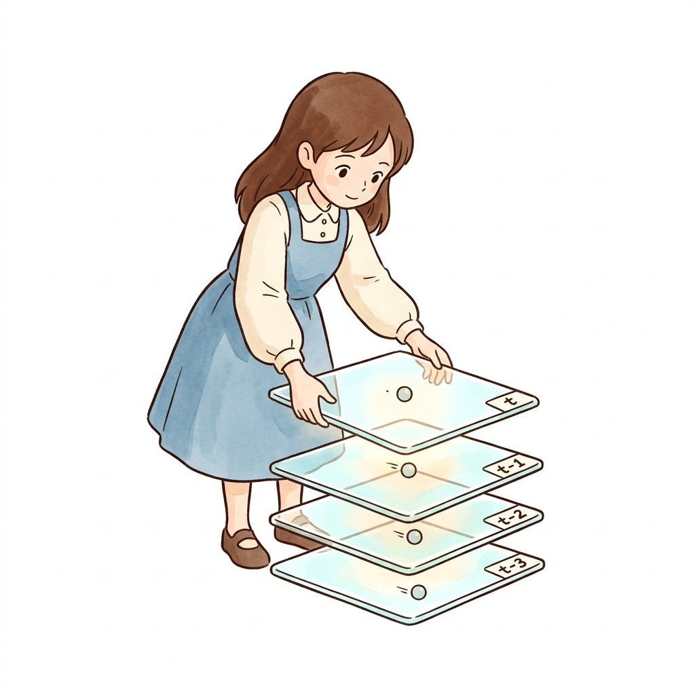
그림 12-3-13 프레임 스태킹(Frame Stacking): 연속 4개 화면을 포개어 하나의 상태 텐서로 구성잔상 효과: POMDP를 다시 MDP로 복원하다
만화경이나 애니메이션 플립북처럼 연속된 4장의 프레임을 겹치면, 공의 이전 위치와 현재 위치 사이에 시간적 잔상(Trailing Ghost)이 드러납니다.
- 공의 위치 변화량($\Delta x, \Delta y$)을 통해 진행 방향(각도)과 속도 벡터(Velocity Vector)가 즉시 복원됩니다.
- 이로써 에이전트는 과거 프레임을 따로 기억할 필요 없이, 입력된 4채널 텐서 하나만으로 공의 미래 궤적을 예측할 수 있는 완전한 마르코프 상태(MDP)를 되찾게 됩니다!
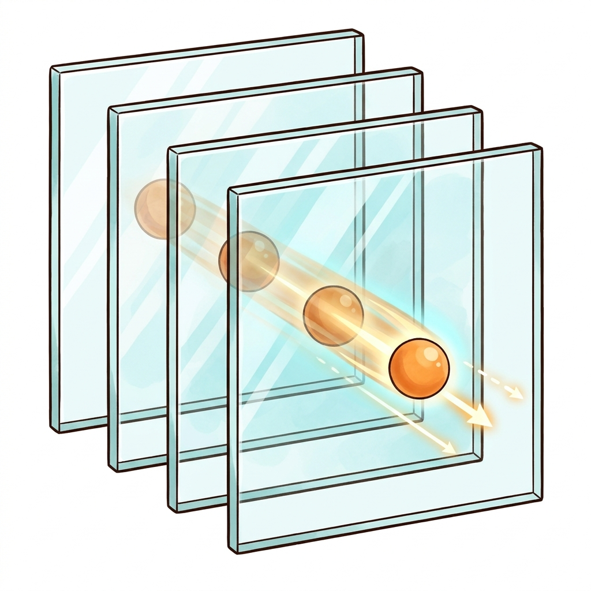
그림 12-3-14 4프레임 중첩으로 명확해진 공의 비행 궤적과 속도 벡터 (POMDP를 MDP로 변환)POMDP 해결의 두 가지 대안: 프레임 스태킹 vs 순환신경망(RNN)
[!NOTE] POMDP를 해결하는 방법은 프레임 스태킹 외에도 순환 신경망(RNN / LSTM)을 결합하는 방법이 있습니다(DRQN; Deep Recurrent Q-Network).
- RNN 방식: 이전 시점의 은닉 상태(Hidden State)를 기억해 시간 정보를 누적합니다. 긴 시간의 문맥을 기억할 수 있지만, 학습이 까다롭고 역전파 속도가 느립니다.
- 프레임 스태킹: 최근 4장의 프레임만 고정 크기 텐서로 묶어 일반 피드포워드 CNN에 전달합니다. 매우 단순하고 병렬 처리가 빠르며 안정적이어서 아타리 DQN의 표준이 되었습니다.
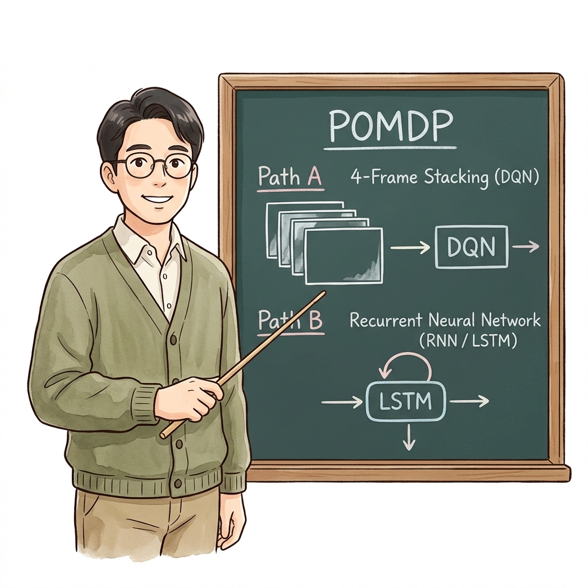
그림 12-3-15 POMDP 해결의 두 갈래 길: 고정 프레임 스태킹 vs 순환신경망(RNN/LSTM) 대안 비교DQN의 4단계 이미지 전처리 파이프라인
프레임 스태킹을 적용하기 전에, 딥마인드는 연산 효율을 극대화하기 위해 원본 $210 \times 160$ 컬러 이미지를 다음 4단계 전처리 파이프라인으로 압축 가공합니다:
- 영역 자르기 (Cropping): 상단의 점수판이나 경기 외곽 불필요 영역을 제거하고 게임이 진행되는 핵심 사각형 영역만 추출
- 그레이스케일 변환 (Grayscale): 컬러(RGB 3채널)를 1채널 흑백 명도값으로 변환하여 데이터양을 $1/3$로 축소
- 크기 축소 (Resizing): $84 \times 84$ 픽셀의 정사각형 해상도로 다운샘플링
- 값 정규화 (Normalization): $0 \sim 255$ 범위의 정수 픽셀값을 $0.0 \sim 1.0$ 부동소수점으로 스케일링
전처리된 $84 \times 84$ 이미지 4장을 포개어, 최종 상태 형상은 $(4, 84, 84)$ 텐서가 됩니다.
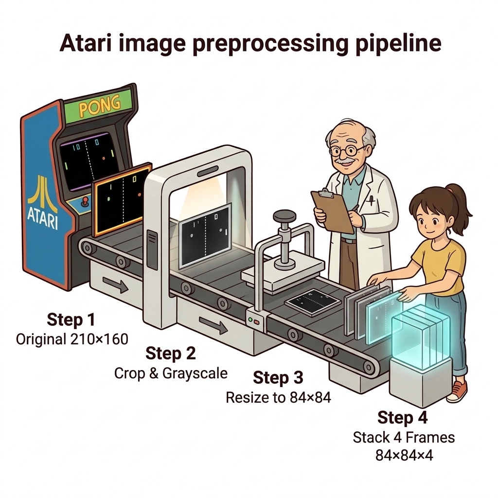
그림 12-3-16 DQN의 4단계 이미지 전처리 파이프라인 (자르기 -> 회색조 -> 84x84 축소 -> 4프레임 중첩)[실습 1단계] 아타리 4단계 전처리 및 프레임 스태킹 구현
실제 아타리 화면 데이터가 전처리되어 4차원 텐서로 변환되는 과정을 step01_atari_preprocessing.py 스크립트로 구현해 확인해보겠습니다:
# step01_atari_preprocessing.py 핵심 전처리 함수
def preprocess_frame(frame_rgb: np.ndarray) -> np.ndarray:
"""DQN Nature 2015 규격 4단계 전처리 파이프라인"""
# 1. 주변 불필요 영역 자르기: (210, 160) -> (180, 160)
cropped = frame_rgb[15:195, :]
# 2. 그레이스케일 변환: RGB -> 1채널 (명도 공식 적용)
gray = np.dot(cropped[..., :3], [0.299, 0.587, 0.114]).astype(np.float32)
# 3. 84 x 84 크기 축소 (리사이징)
resized = resize_to_84x84(gray)
# 4. 0.0 ~ 1.0 값 정규화
normalized = resized / 255.0
return normalized
# 연속된 4개 프레임을 채널 축으로 스태킹
state_tensor = np.stack(preprocessed_frames, axis=0) # Shape: (4, 84, 84)
[실습 1단계 결과] 터미널 출력 및 텐서 형상 검증
스크립트를 실행하면 원본 3채널 프레임이 84×84 그레이스케일로 압축된 뒤, 4개 프레임이 결합되어 $(4, 84, 84)$ 상태 텐서로 완벽히 조립되는 과정을 확인할 수 있습니다.
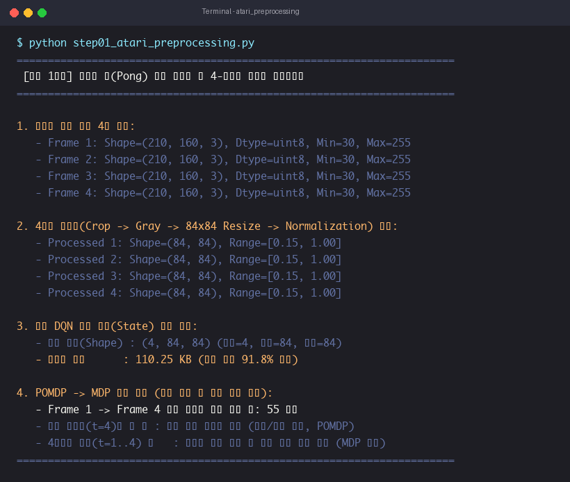
그림 12-3-T1 아타리 전처리 및 4-프레임 스태킹 터미널 실행 결과 (ch12_3_step01_terminal.png)
======================================================================
[실습 1단계] 아타리 퐁(Pong) 화면 전처리 및 4-프레임 스태킹 파이프라인
======================================================================
1. 아타리 원본 화면 4개 수집:
- Frame 1: Shape=(210, 160, 3), Dtype=uint8, Min=30, Max=255
- Frame 2: Shape=(210, 160, 3), Dtype=uint8, Min=30, Max=255
- Frame 3: Shape=(210, 160, 3), Dtype=uint8, Min=30, Max=255
- Frame 4: Shape=(210, 160, 3), Dtype=uint8, Min=30, Max=255
2. 4단계 전처리(Crop -> Gray -> 84x84 Resize -> Normalization) 완료:
- Processed 1: Shape=(84, 84), Range=[0.15, 1.00]
- Processed 2: Shape=(84, 84), Range=[0.15, 1.00]
- Processed 3: Shape=(84, 84), Range=[0.15, 1.00]
- Processed 4: Shape=(84, 84), Range=[0.15, 1.00]
3. 최종 DQN 입력 상태(State) 텐서 구축:
- 텐서 형상(Shape) : (4, 84, 84) (채널=4, 높이=84, 너비=84)
- 메모리 크기 : 110.25 KB (원본 대비 91.8% 압축)
4. POMDP -> MDP 변환 입증 (공의 속도 및 진행 방향 검출):
- Frame 1 -> Frame 4 사이 움직임 감지 픽셀 수: 55 픽셀
- 단일 프레임(t=4)만 볼 때 : 공의 정지 위치만 보임 (방향/속도 불명, POMDP)
- 4프레임 중첩(t=1..4) 시 : 우하향 이동 궤적 및 속도 벡터 명확 복원 (MDP 완결)
======================================================================
[실습 1단계 시각화] 원본 프레임 vs 전처리 프레임 비교
step01_atari_preprocessing.py가 생성한 시각화 그래프를 살펴보면, 복잡한 배경 노이즈가 제거되고 경기 패들과 공의 위치가 84×84 격자 위에 선명하게 추출되었음을 확인할 수 있습니다.
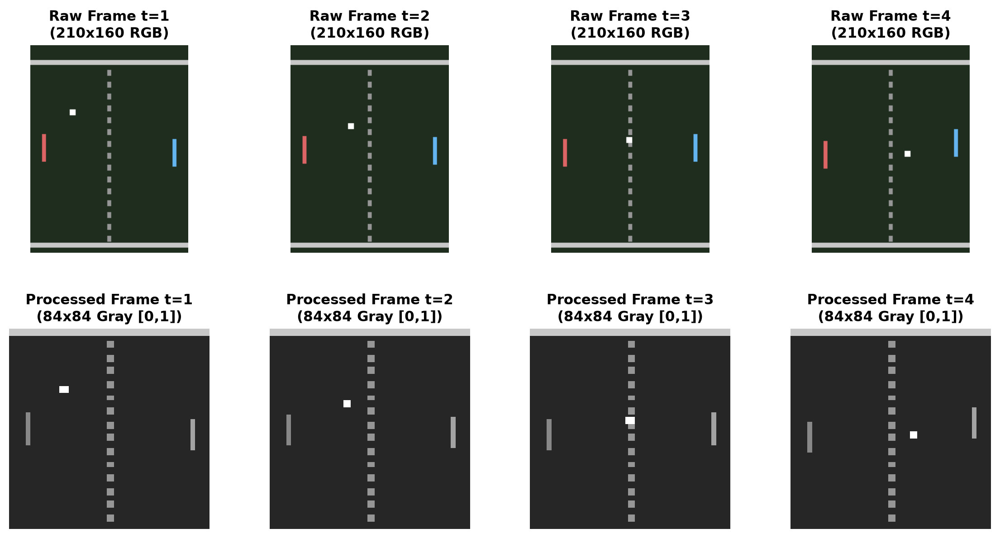
그림 12-3-S1 원본 210×160 RGB 프레임(1행)과 84×84 그레이스케일 전처리 프레임(2행)의 시간별 변화12.3.3 합성곱 신경망(CNN)
왜 MLP가 아니라 합성곱 신경망(CNN)인가?
카트폴에서는 단순 완전 연결 계층(MLP)을 사용했지만, 2차원 공간 정보를 가진 이미지에는 합성곱 신경망(CNN; Convolutional Neural Network)이 필수적입니다:
- 공간적 평행이동 불변성(Spatial Translation Invariance): 공이나 패들이 화면 왼쪽 위에 있든, 오른쪽 아래에 있든 동일한 특징 필터가 작동해야 합니다.
- 가중치 공유(Weight Sharing): 모든 픽셀마다 별도의 가중치를 두지 않고, 작은 커널(Filter)을 슬라이딩하여 파라미터 수를 획기적으로 줄입니다.
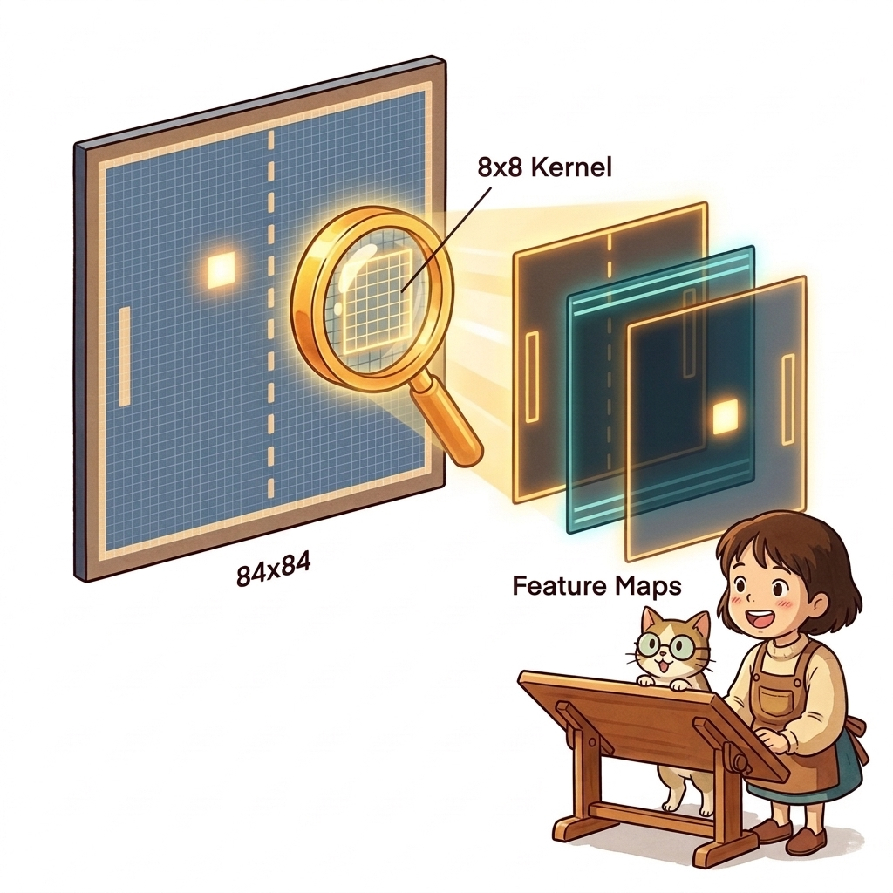
그림 12-3-17 합성곱 신경망(CNN): 84x84 화면 위를 이동하는 필터로 시각적 공간 특징 추출DQN Nature 2015의 CNN 네트워크 구조
DQN 논문 [12]에서 채택한 공식 CNN 구조는 다음과 같습니다:
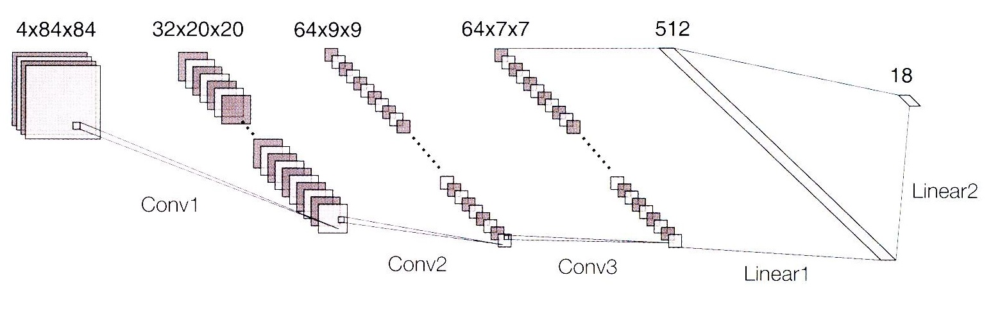
그림 12-11 DQN에서 사용한 CNN 구조 ($4 \times 84 \times 84 \rightarrow \text{Conv1} \rightarrow \text{Conv2} \rightarrow \text{Conv3} \rightarrow \text{Linear1} \rightarrow \text{Linear2} \rightarrow \text{Actions}$)계층별 텐서 변환과 특징 추출 흐름
CNN 계층을 통과하며 고차원 픽셀 데이터가 저차원 행동 가치 벡터로 압축되는 과정은 다음과 같습니다:
| 계층 (Layer) | 입력 크기 | 필터 규격 (커널, 스트라이드) | 출력 크기 | 역할 및 특징 | ||
|---|---|---|---|---|---|---|
| Input | - | - | $4 \times 84 \times 84$ | 전처리된 4개 연속 프레임 | ||
| Conv 1 | $4 \times 84 \times 84$ | $8 \times 8$ 커널, 스트라이드 4, 채널 32 | $32 \times 20 \times 20$ | 큰 윤곽선, 경계면, 물체 기초 형태 추출 | ||
| Conv 2 | $32 \times 20 \times 20$ | $4 \times 4$ 커널, 스트라이드 2, 채널 64 | $64 \times 9 \times 9$ | 패들과 공의 상대적 기하학적 형상 추출 | ||
| Conv 3 | $64 \times 9 \times 9$ | $3 \times 3$ 커널, 스트라이드 1, 채널 64 | $64 \times 7 \times 7$ | 미세한 움직임 및 국소 동역학 패턴 포착 | ||
| Linear 1 | $3,136$ ($64 \times 7 \times 7$) | 완전 연결 (FC), 은닉 노드 512 | $512$ | 시각 특징 종합 추상화 | ||
| Linear 2 | $512$ | 완전 연결 (FC), 노드수 = 행동수 | **$ | \mathcal{A} | $ (예: 6 or 18)** | 각 조이스틱 행동별 $Q(s, a)$ 출력 |
모든 은닉 계층의 활성화 함수로는 ReLU($\text{Rectified Linear Unit}$)가 사용되었습니다.
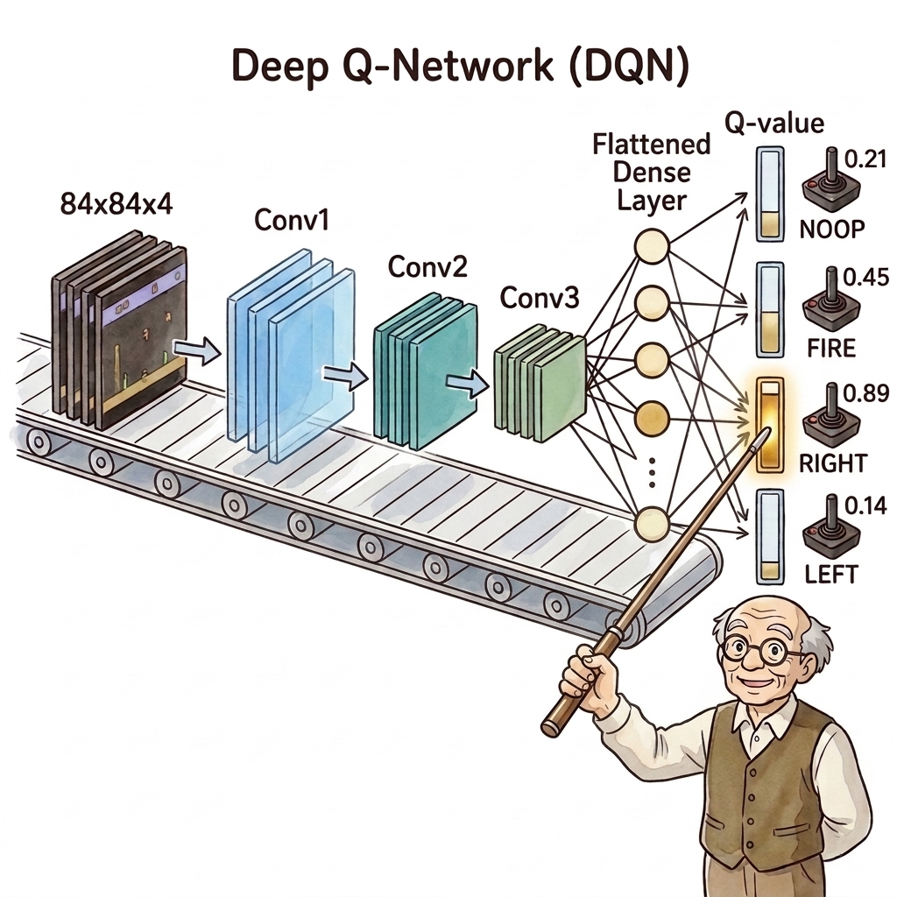
그림 12-3-18 합성곱 계층에서 완전연결 계층을 거쳐 아타리 조이스틱 행동 Q값 출력12.3.4 실전 성능을 폭발시킨 3대 학습 공학 묘수
네트워크와 전처리 파이프라인 외에도, 딥마인드는 수십 종의 아타리 게임에서 안정적인 학습 수렴을 이끌어내기 위해 3가지 핵심 엔지니어링 기법을 도입했습니다.
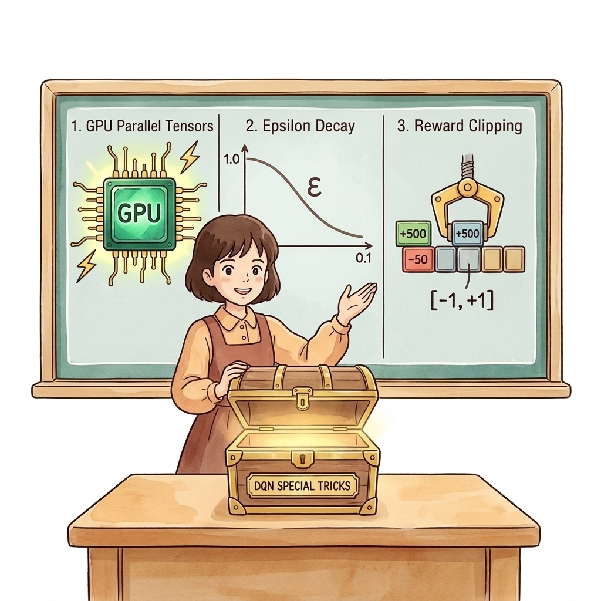
그림 12-3-19 DQN 실전 성능을 폭발시킨 3대 묘수: GPU 가속, 엡실론 감쇠, 보상 클리핑12.3.4.1 고속 GPU 텐서 병렬 연산
아타리 1회 학습에는 수백만 프레임의 합성곱 순전파와 역전파 연산이 발생합니다.
- 단일 CPU 코어로 처리할 경우 1개 에피소드 학습에 수십 분이 걸려 실질적인 연구가 불가능합니다.
- 수천 개의 산술 연산 코어를 가진 GPU(CUDA / CuPy)를 통해 미니배치(32개)를 병렬 처리함으로써 연산 속도를 수십 배 이상 가속화했습니다.
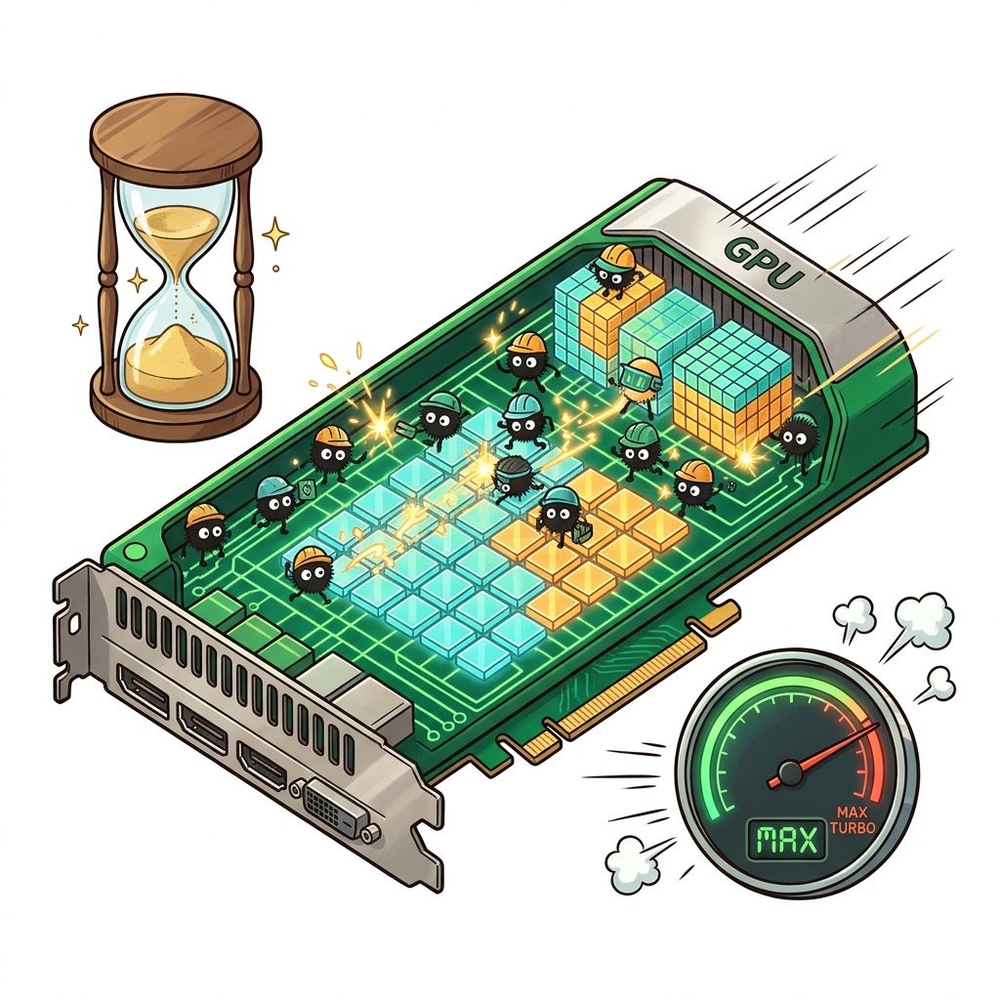
그림 12-3-20 초록빛 GPU 가속 엔진: 수천 개 코어의 대규모 텐서 병렬 연산 혁신DeZero의 GPU 가속 스위치
본 교재의 베이스 프레임워크인 DeZero 역시 CuPy 라이브러리를 연동하여 코드 단 한 줄(dezero.cuda.gpu_enable = True)로 넘파이 배열 연산을 즉시 GPU 모드로 전환할 수 있도록 설계되어 있습니다.
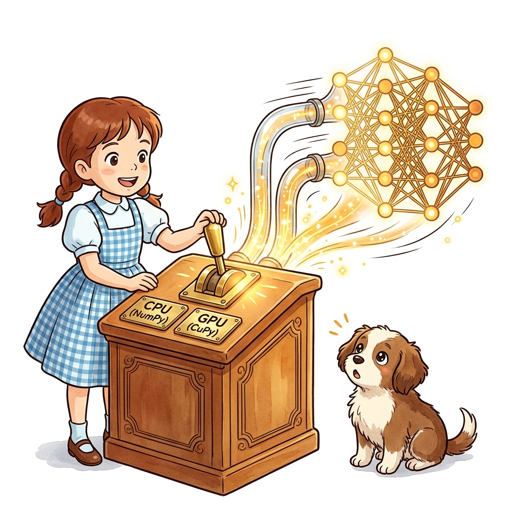
그림 12-3-21 DeZero 프레임워크의 CuPy GPU 모드 전환 스위치와 고속 가속12.3.4.2 $\epsilon$-선형 감쇠(Linear Annealing) 스케줄
에이전트가 게임의 아무것도 모르는 초기 단계와, 100만 스텝을 거치며 게임의 물리 법칙을 충분히 깨우친 후반 단계의 탐색 전략은 달라야 합니다:
- 초기: 아는 것이 없으므로 무작위 탐험(Exploration)을 적극적으로 시도해야 함 ($\epsilon \approx 1.0$)
- 후반: 신경망의 가치 추정치가 정교해졌으므로 아는 지식을 최대한 활용(Exploitation)하여 고득점을 공략해야 함 ($\epsilon \rightarrow 0.1$)
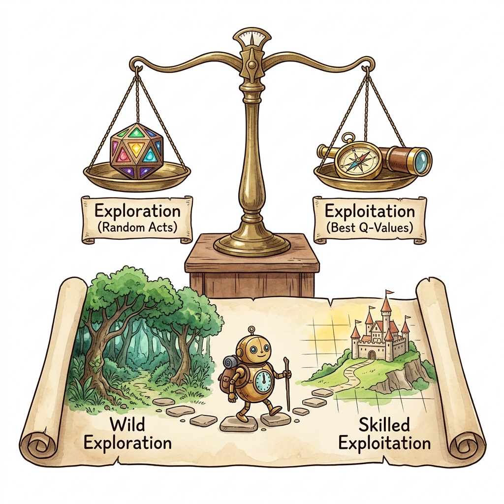
그림 12-3-22 에피소드 진행에 따른 탐색(주사위)과 활용(나침반)의 황금 균형 저울DQN의 $\epsilon$ 감쇠 램프 곡선
DQN 논문에서는 처음 100만(1M) 스텝까지 $\epsilon$을 $1.0$에서 $0.1$까지 일정한 기울기(선형)로 점진적으로 감소시키고, 이후에는 $0.1$(10%의 최소 탐색)로 일정하게 유지하는 스케줄을 적용했습니다:
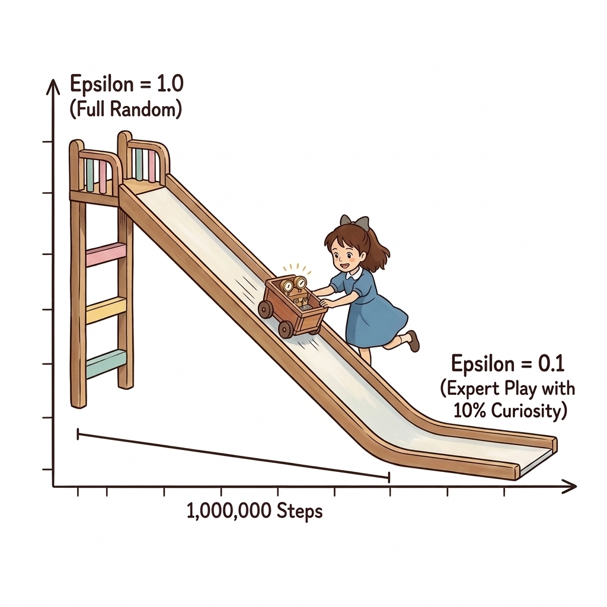
그림 12-3-23 선형 엡실론 감쇠 램프: 1.0(100% 랜덤)에서 100만 스텝 후 0.1(10% 탐험) 안정적 유지교재 원본 $\epsilon$ 감쇠 그래프
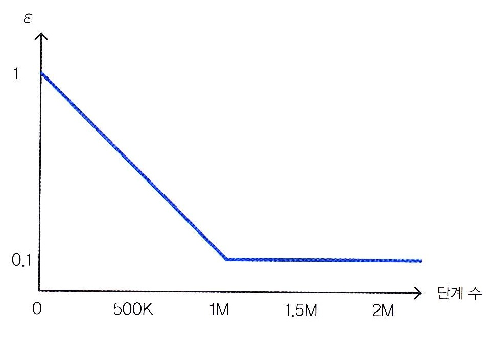
그림 12-12 DQN에서의 $\epsilon$값 변경 추이 (가로축: 단계 수 $0 \rightarrow 1\text{M} \rightarrow 2\text{M}$, 세로축: $\epsilon = 1.0 \rightarrow 0.1$)이러한 점진적 감쇠 덕분에, 에이전트는 초기에 다양한 플레이 방식을 폭넓게 수집하고 후반에는 정교한 컨트롤 기술을 흔들림 없이 완성할 수 있습니다.
12.3.4.3 보상 클리핑(Reward Clipping)
비디오 게임마다 점수 체계는 천차만별입니다:
- 〈퐁〉: $+1$점 또는 $-1$점
- 〈벽돌깨기〉: 벽돌 하나당 $+1 \sim +7$점
- 〈스페이스 인베이더〉: UFO를 격추하면 한 번에 $+100 \sim +300$점
만약 점수 스케일이 제각각이라면, 점수가 수백 점씩 나오는 게임에서는 오차(Loss)와 기울기(Gradient)가 폭발하여 학습률 $\alpha$를 게임마다 완전히 다르게 튜닝해야 합니다.
이를 방지하기 위해 딥마인드는 양의 보상은 무조건 $+1$, 음의 보상은 $-1$, 그 외는 $0$으로 일괄 압축하는 ‘보상 클리핑(Reward Clipping)’을 적용했습니다:
\[R_{\text{clipped}} = \operatorname{sign}(R) \in \{-1, 0, +1\}\]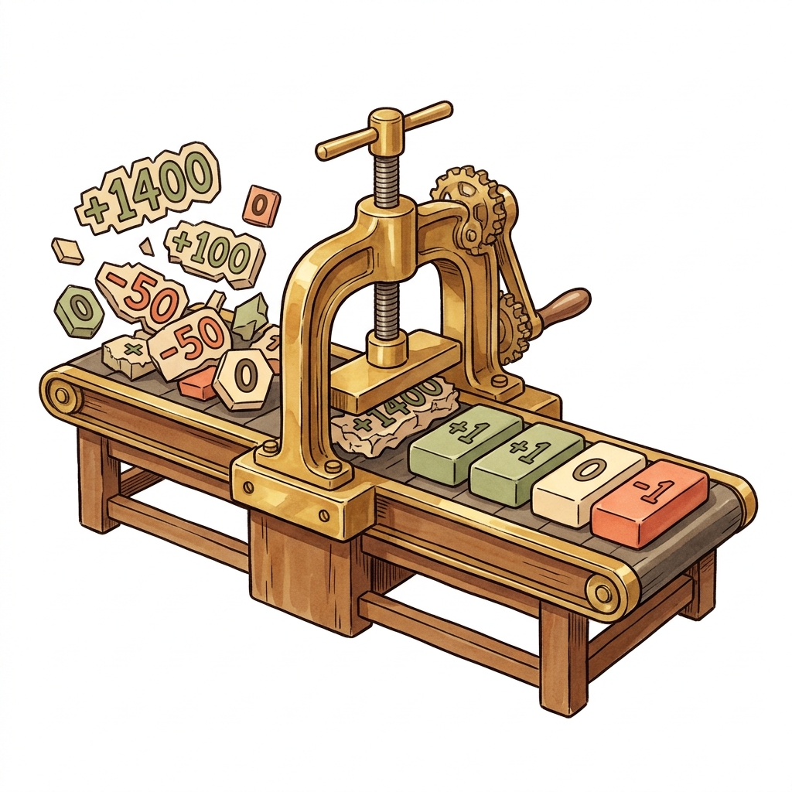
그림 12-3-24 보상 클리핑: 제각각인 게임 점수를 [-1, 0, +1] 규격 벽돌로 균일하게 압축 성형[!NOTE] 〈퐁〉의 경우 본래 보상이 이미 $-1, 0, +1$ 중 하나이므로 보상 클리핑의 영향을 받지 않지만, 다른 고득점 게임들에서는 하나의 통일된 하이퍼파라미터로 수십 개 게임을 안정적으로 학습시키는 일등 공신이 되었습니다.
아타리 게임 완전 정복과 초인적 플레이 달성
이상의 기법(경험 재생 + 목표 신경망 + 4프레임 전처리 + CNN + GPU + $\epsilon$ 감쇠 + 보상 클리핑)을 결합한 DQN은 마침내 〈퐁〉 게임을 완벽하게 마스터했습니다.
단순히 비기는 수준이 아니라, 상대방 컴퓨터의 빈틈을 파고들어 시속 100km의 강스매시를 꽂아 넣으며 21대 0으로 컴퓨터를 농락하는 압도적인 초인적 경지에 도달했습니다.
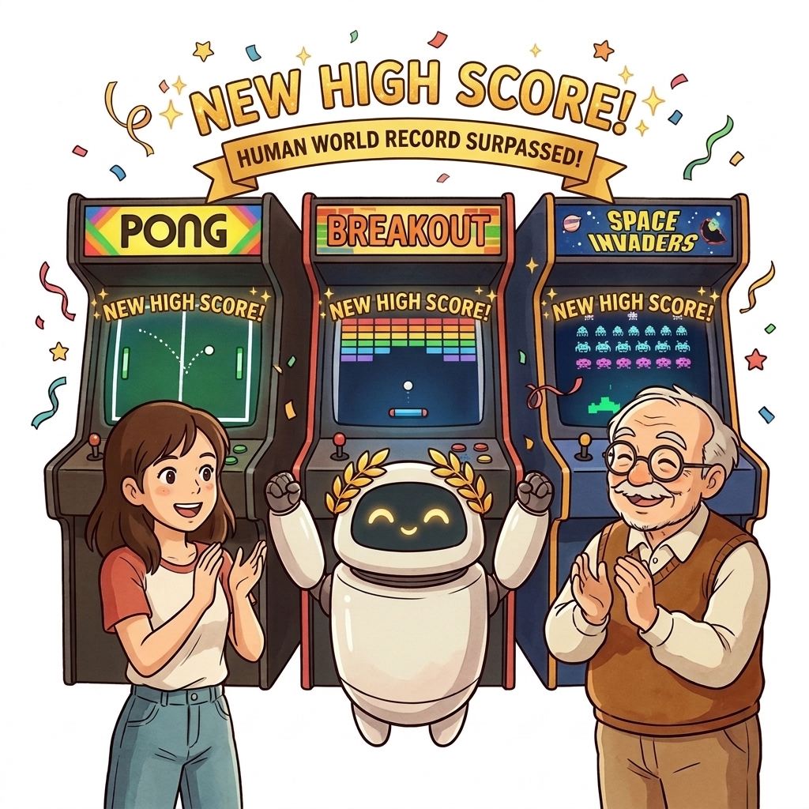
그림 12-3-25 퐁, 벽돌깨기, 스페이스 인베이더에서 인간 신기록을 돌파한 DQN 챔피언 에이전트범용 인공지능(AGI)을 향한 위대한 이정표
무엇보다 위대한 사실은, 코드를 단 한 줄도 바꾸지 않고 동일한 DQN 알고리즘과 신경망 구조를 〈벽돌깨기(Breakout)〉, 〈스페이스 인베이더〉, 〈엔듀로(Enduro)〉 등에 적용했을 때도 모두 인간 최고 기록을 갈아치웠다는 점입니다.
게임마다 특별한 규칙이나 요령을 인간이 코딩해 주지 않아도, 날것의 시각 픽셀만을 보고 스스로 지능을 진화시킬 수 있음을 증명한 DQN은 현대 딥러닝과 강화학습 역사상 가장 위대한 이정표로 기록되었습니다.
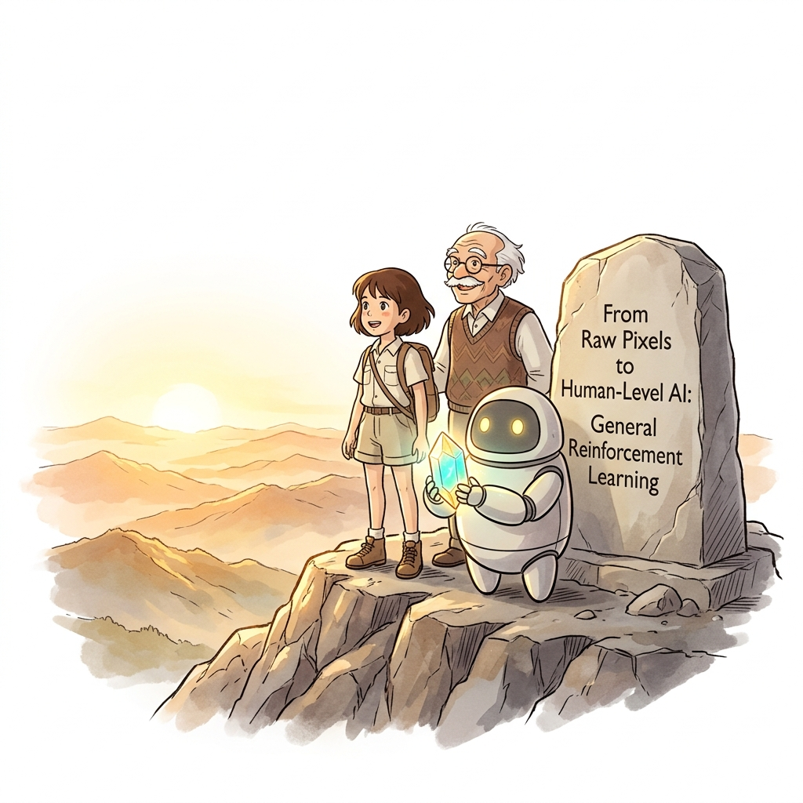
그림 12-3-26 날것의 픽셀에서 인간 수준 지능으로: 일반 인공지능(AGI)을 향한 위대한 이정표